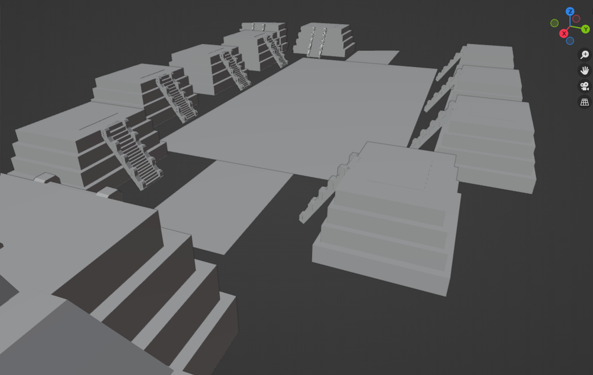
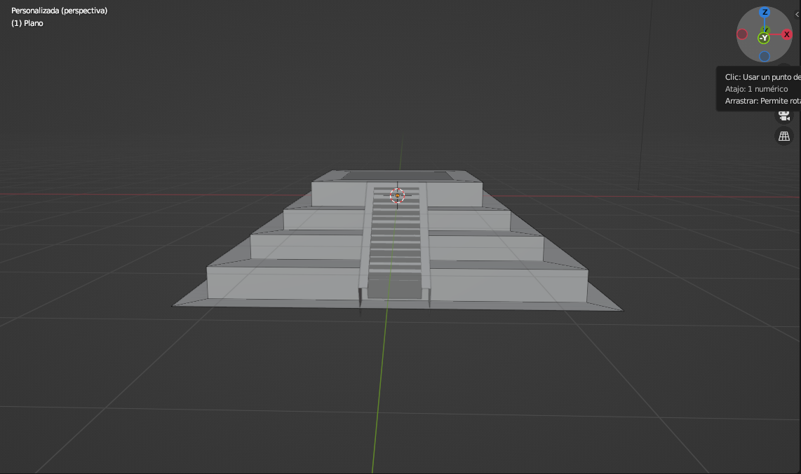
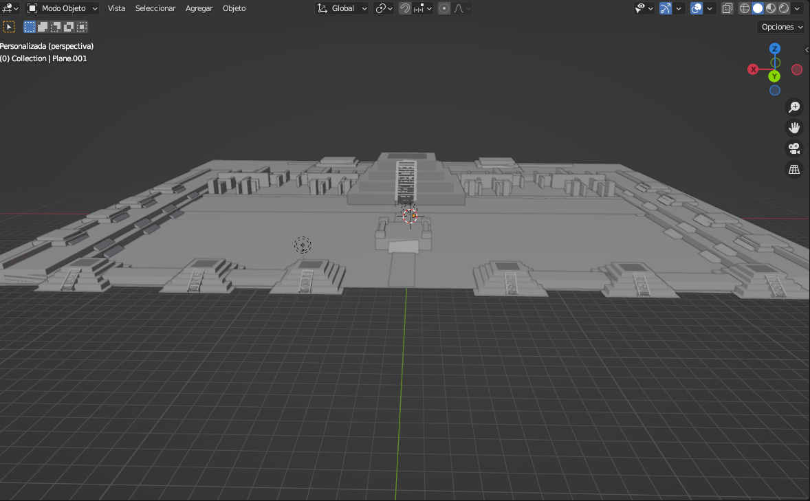

APORTACIONES 3D

Me toco el equipo de "PRODUCCION" asi que apoye con algunos modelados como este que fue una seccion de teotihuacan con la piramide de la luna y las piramides que la rodean.

Esta piramide fue la que acompaña a la piramide de la luna en es a zona fue otra de mis aportaciones para el equipo

Este modelo es una de los mas detallados la "CIUDADELA" tambien es una zona concida por tener tambien un museo al interior de la piramide.